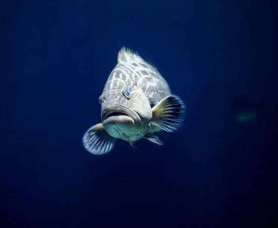
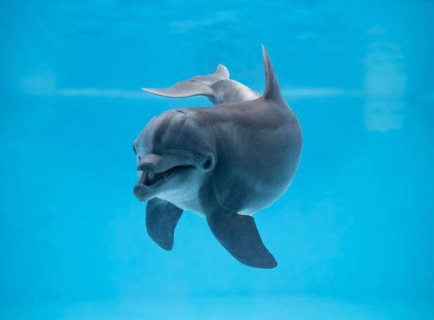
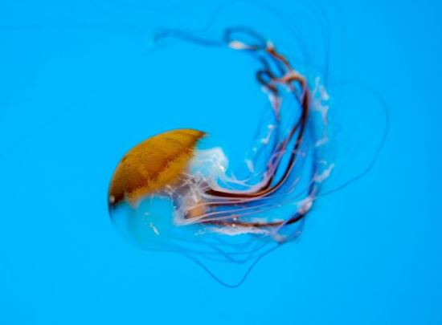
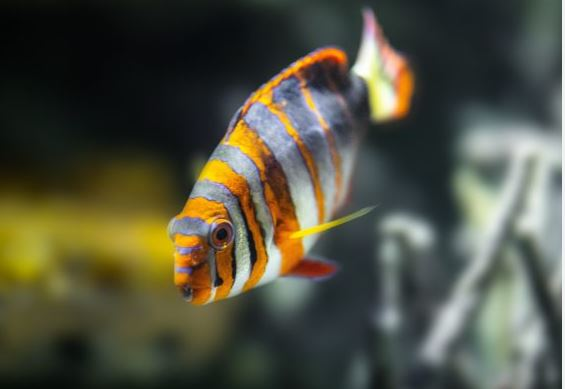
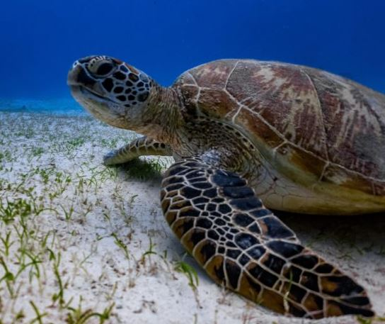
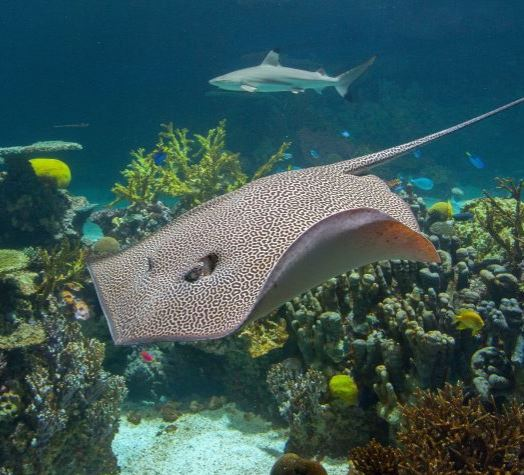

Black Grouper
Black grouper are born female, but some transform into males when they are large enough. These fish can live for more than 30 years, though most are caught before reaching that age.
Atlantic Bottlenose Dolphin
Atlantic bottlenose dolphins are smart, social animals, called "bottlenose" because of their short, stubby rostrums, or snouts. A bottlenose dolphin's back is a nlight to slate gray color, which fades to a pale gray or pink belly. This species' dorsal fin is tall and curves backward. The fluke, or tail fin, is curved with a deep notch in the middle, and their pectoral, or side, fins are pointed.
Atlantic Bay Nettle
The Atlantic bay nettle has two color varieties; in the upper Chesapeake Bay, the white variety is most prevalent, and closer to the Atlantic Ocean, this jelly can have a white, red or brown coloration. Nettles populate the Chesapeake Bay and its tributaries primarily from July through September, though some individuals can be present into November.
Harlequin Tuskfish
The stunning harlequin tuskfish usually has eight pairs of alternating orange, blue, and white bands on its body and prominent sharp, blue teeth. This species inhabits coral reefs and has been found as deep as 105 feet. The harlequin tuskfish is a solitary animal, but it can be aggressive and territorial at times.
Green Sea Turtle
The reticulated whiptail ray has a light brown body with dark brown spots and a solid white underside. Its snout is pointed, and its tail can reach three times the length of its body. The tail usually has one barb on it.
Reticulated Whiptail Ray
Black grouper are born female, but some transform into males when they are large enough. These fish can live for more than 30 years, though most are caught before reaching that age.